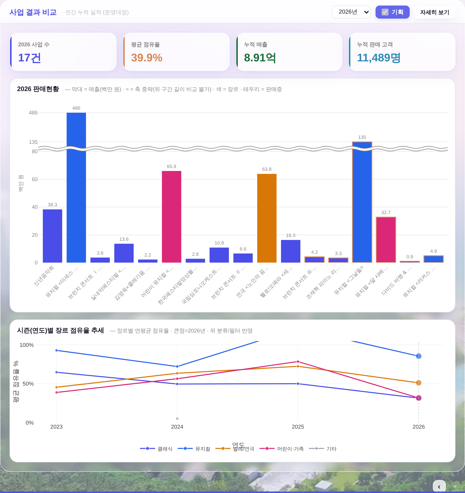
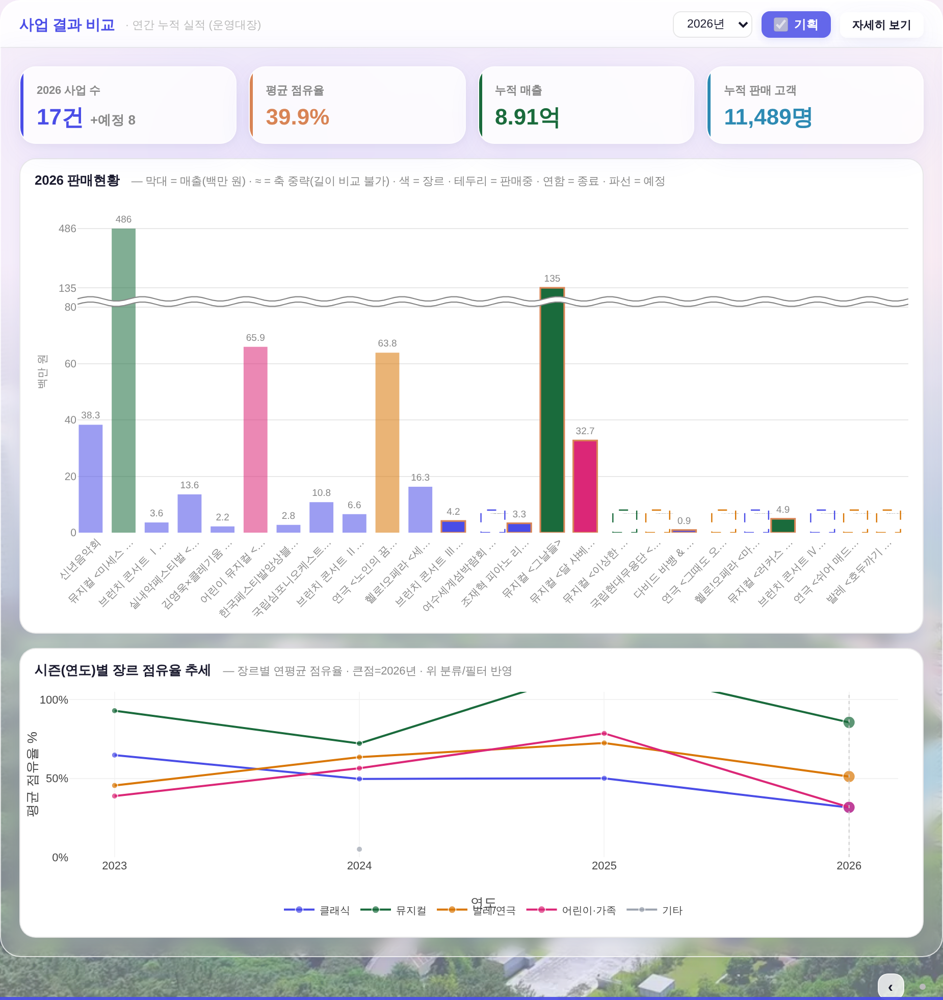

?qa=admin(실API·실데이터·PII 무접촉) · 데이터 = 커밋된 시안 스냅샷(260730 실측본) 재사용 · 하네스 = tools/scratch/shot_bizbars.mjs(IDX=로 전/후를 같은 데이터로 잰다) · 전 = origin/main · 후 = 본 PR.

--green(=--c3 팔레트 칩) — 구 파랑은 클래식 --accent와 인접 blue 쌍이라 막대가 섞여 보였다. 팔레트 안에서 교체 = 새 색 반입 0 · raw hex 총량 무변(1590). 이 맵은 앱 전체가 공유하므로 시즌 추세 선·범례·장르 축적 게이지·표 칩까지 동시에 그린으로 간다.--peach-text 테두리 / 예정 = 채움 없음 + 장르색 파선 자리. 기틀 §3.5③ 「색 하나에만 의존 금지」에 맞춰 농도·테두리·파선 3중 비색 단서.PERFS 공연축(부팅 시 이미 로드 = 추가 fetch 0). 아직 티켓이 안 열린 사업이라 값이 없다 → 빈 파선 자리로만 그리고 집계에서 제외(사업 수·평균 점유율·매출·고객 오염 0). 건수는 KPI에 17건 +예정 8로 병기.
| 항목 | 전 | 후 |
|---|---|---|
| 막대(사업) 수 | 17 | 25(실적 17 + 예정 8) |
| KPI 「2026 사업 수」 | 17건 | 17건 +예정 8 |
| 평균 점유율 | 39.9% | 39.9%(예정 제외 = 무변) |
| 누적 매출 / 고객 | 8.91억 / 11,489명 | 8.91억 / 11,489명(무변) |
| 차트 도형 수 | 3(≈ 중략 1줄) | 11(≈ 1줄 + 예정 파선 8) |
| y눈금 · 막대 픽셀 | 전·후 동일(0·20·40·60·80·135·486 · 486→298px, 0.9→2.5px) = 축 중략 회귀 0 | |
.bizm-card(라운드 16·간격 14) · .bizm-kpi(값 22px·라벨 11px) · 차트 축 글자 10.5px · 차트 높이 430 = 무접촉.check_design 1590/1590 동결(팔레트 안 교체 · 신규 hex 0 · :root 2/0) · check_refs ✓ · check_wiring ✓ · smoke_layout PASS(1920×1080 이젤·흰 라인 Δ0).data-bizmfill이 16px 흡수 · 평의회2·4 기확인) · 1280×800처럼 차트가 202px까지 접히는 화면은 축 중략이 꺼진다(압축 구간 미달).